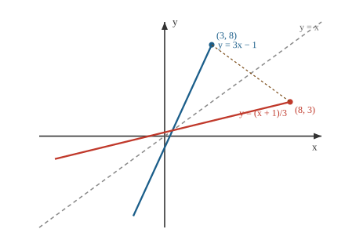
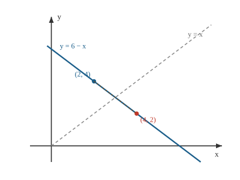
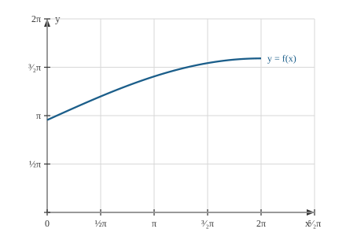

<script>if(location.hostname.endsWith('onrender.com'))location.replace('https://math-sandbox.pages.dev'+location.pathname+location.search+location.hash)</script>
<section class="theory" data-section="P1-2.4">
<h2>2.4 The graph of a function and its inverse</h2>
<p class="src">Based on Cambridge International AS &amp; A Level Mathematics: Pure Mathematics 1 Coursebook (Sue Pemberton), Chapter 2, printed pp.48–51 (Key point 2.5, Worked examples 2.9–2.10 style, Exercise 2D). Printed pages were read from P1.pdf (printed 48–51 = PDF 60–63). Own wording and new numbers. Page 51 overlaps the start of 2.5. Teaching stops before 2.5 Transformations of functions.</p>
<p class="key-words"><strong>Key words:</strong> <em>inverse function</em>, <em>self-inverse function</em>, <em>one-one function</em></p>
<p>The graphs of a one-one function \(y=f(x)\) and its <strong>inverse function</strong> \(y=f^{-1}(x)\) are reflections of one another in the line \(y=x\). Interchanging the coordinates of a point on \(y=f(x)\) gives a point on \(y=f^{-1}(x)\). The domain of the function \(f^{-1}\) is the range of the function \(f\), and the range of the function \(f^{-1}\) is the domain of the function \(f\).</p>
<figure>

<figcaption>The graphs of \(y=3x-1\) for \(-2\leqslant x\leqslant 3\) and \(y=\dfrac{x+1}{3}\) (Worked example 1) are reflections of one another in \(y=x\). The point \((3, 8)\) is paired with \((8, 3)\).</figcaption>
</figure>
<script src="../../assets/widget-kinds-pkg12.js"></script>
<div class="ms-widget" data-widget="inverse"><p class="ms-widget-fallback">Interactive figure: the inverse as a reflection in the line y = x.</p></div>
<div class="worked-example">
<h4>Worked example 1</h4>
<p class="src">Book: the introductory graph on printed p.48, and Key point 2.5. New numbers.</p>
<p>The function \(f\) is given by \(f(x)=3x-1\) for \(-2\leqslant x\leqslant 3\). State the coordinates of the endpoints of the graph of \(y=f(x)\), and write down the domain of \(f^{-1}\).</p>
<ol class="steps">
<li>\(f(-2)=-7\) and \(f(3)=8\), so the endpoints are \((-2,-7)\) and \((3, 8)\). <span class="mark">B1</span></li>
<li>The range of the function \(f\) is \(-7\leqslant f(x)\leqslant 8\), so the domain of \(f^{-1}\) is \(-7\leqslant x\leqslant 8\). <span class="mark">A1</span></li>
</ol>
<p class="final"><strong>Answer:</strong> \((-2,-7)\) and \((3, 8)\); domain of \(f^{-1}\) is \(-7\leqslant x\leqslant 8\)</p>
</div>
<p>If a function is equal to its own inverse, it is called a <strong>self-inverse function</strong>. The graph of a self-inverse function is symmetrical about the line \(y=x\): reflecting the graph in \(y=x\) leaves it unchanged. For example, \(f(x)=6-x\) is self-inverse, and the points \((2, 4)\) and \((4, 2)\) both lie on its graph.</p>
<figure>

<figcaption>The graph of the self-inverse function \(y=6-x\) is symmetric about \(y=x\). The points \((2, 4)\) and \((4, 2)\) both lie on the graph.</figcaption>
</figure>
<div class="worked-example">
<h4>Worked example 2</h4>
<p class="src">Book: Worked example 2.10 style, printed p.50, showing that a fractional linear function is self-inverse. New numbers.</p>
<p>The function \(f\) is given by \(f(x)=\dfrac{3x+5}{x-3}\) for \(x\in\mathbb{R}\), \(x\neq 3\). Show that \(f\) is self-inverse.</p>
<ol class="steps">
<li>Write \(y=\dfrac{3x+5}{x-3}\). Interchange \(x\) and \(y\): \(x=\dfrac{3y+5}{y-3}\). <span class="mark">M1</span></li>
<li>Then \(x(y-3)=3y+5\), so \(xy-3x=3y+5\), hence \(xy-3y=3x+5\), and \(y(x-3)=3x+5\). Thus \(y=\dfrac{3x+5}{x-3}\). So \(f^{-1}(x)=f(x)\), and \(f\) is self-inverse. <span class="mark">A1</span></li>
</ol>
<p class="final"><strong>Answer:</strong> \(f^{-1}(x)=\dfrac{3x+5}{x-3}=f(x)\), so \(f\) is self-inverse</p>
</div>
<p>Official questions often give the graph of a one-one function and ask you to sketch the inverse on the same axes. Draw the mirror line \(y=x\) first, then reflect the given graph. The reconstruction below shows the official graph of \(f(x)=3+2\sin\dfrac{x}{4}\) for \(0\leqslant x\leqslant 2\pi\) from 9709/12/M/J/23 Question 8; the inverse is not drawn.</p>
<figure>

<figcaption>Reconstruction of the official 9709/12/M/J/23 Question 8 diagram: \(y=f(x)\) starts at \((0, 3)\) and ends at \((2\pi,5)\). The range of the function is \(3\leqslant f(x)\leqslant 5\).</figcaption>
</figure>
<h3>Common mistakes</h3>
<ul>
<li>Sketching \(y=f^{-1}(x)\) as a reflection in an axis, instead of in the line \(y=x\).</li>
<li>Forgetting that the domain of \(f^{-1}\) is the range of \(f\), so using the original domain for the inverse graph.</li>
<li>Claiming that a many-one graph has an inverse without first restricting the domain so that the function is one-one.</li>
</ul>
<h3>Quick checks</h3>
<div class="quick-check" data-q="QC1">
<h4>Quick check 1</h4>
<p>The point \((2, 5)\) lies on the graph of \(y=f(x)\). The point \((p,q)\) lies on the graph of \(y=f^{-1}(x)\). What is the value of \(p\)?</p>
<details><summary>Worked solution</summary>
<ol class="steps">
<li>Reflecting in \(y=x\) interchanges the coordinates, so \((p,q)=(5, 2)\) and \(p=5\). <span class="mark">A1</span></li>
</ol>
<p class="final"><strong>Answer:</strong> \(5\)</p>
</details>
</div>
<div class="quick-check" data-q="QC2">
<h4>Quick check 2</h4>
<p>The function \(f\) is self-inverse, and \(f(4)=9\). What is the value of \(f(9)\)?</p>
<details><summary>Worked solution</summary>
<ol class="steps">
<li>Because \(f\) is self-inverse, \(f(9)=f^{-1}(9)=4\). <span class="mark">A1</span></li>
</ol>
<p class="final"><strong>Answer:</strong> \(4\)</p>
</details>
</div>
<div class="quick-check" data-q="QC3">
<h4>Quick check 3</h4>
<p>The range of the function \(f\) is \(f(x)\geqslant -5\). The domain of \(f^{-1}\) is \(x\geqslant k\). What is the value of \(k\)?</p>
<details><summary>Worked solution</summary>
<ol class="steps">
<li>The domain of \(f^{-1}\) is the range of \(f\), so \(k=-5\). <span class="mark">A1</span></li>
</ol>
<p class="final"><strong>Answer:</strong> \(-5\)</p>
</details>
</div>
<p class="marks-key"><strong>Marks:</strong> M = method, A = accurate answer (depends on M), B = independent mark. Leave exact values exact.</p>
</section>
